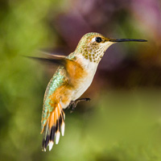
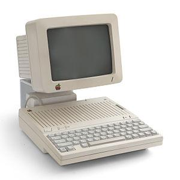

Birds are among the most fascinating creatures on Earth. With more than 10,000 species worldwide,
they fill our skies, forests, and even backyards with color, movement, and song. From the tiny hummingbird,
whose wings beat up to 80 times per second, to the mighty albatross, which can glide for hours without flapping,
birds display an extraordinary range of adaptations. What makes birds especially remarkable is their
role in ecosystems. They help control insect populations, spread seeds, and even pollinate flowers. Without them,
many plants would struggle to survive, and entire food chains could collapse. Bird migration is another
awe-inspiring phenomenon. Every year, millions of birds travel thousands of miles, navigating by stars, the sun,
and Earth’s magnetic fields. Their journeys remind us of the delicate balance of nature and the importance of
protecting habitats. Observing birds can also be a source of personal joy. Whether it’s listening to a morning chorus
or spotting a bright cardinal on a snowy branch, birds have a way of connecting us to the natural world.
Taking the time to notice them not only teaches us about resilience but also invites a sense of wonder into our daily
lives.

Few summer traditions feel as timeless as cherry picking. Standing in an orchard surrounded by rows of trees
heavy with bright red fruit, you can’t help but feel a mix of nostalgia and excitement. It’s more than just gathering
food—it’s an experience that connects us to the rhythm of the seasons and the work of local farmers. Cherry
picking offers a rare chance to slow down. Instead of rushing through a supermarket aisle, you’re out in the fresh air,
reaching for clusters of fruit warmed by the sun. Every handful is both a small triumph and a reminder of the patience
nature requires. Sweet cherries are often eaten right on the spot, their juice staining fingers, while tart varieties are
perfect for pies, jams, and preserves. For families, a trip to the orchard becomes a memory in the making. Children learn
where their food really comes from, while adults rediscover the satisfaction of harvesting by hand. Even a modest
basketful feels more valuable when you’ve picked it yourself. As summer unfolds, cherry picking stands out as a simple
pleasure. It’s a reminder that the sweetest rewards often come not from convenience but from connection—to nature,
tradition, and each other.

| Cherry Type |
Harvest Season |
Flavor |
Price |
| Cherry 1 |
Summer |
taste good |
$$ |
| Cherry 2 |
Winter |
taste strange |
$ |
| Cherry 3 |
Spring |
taste bad |
$$$ |
Computers have revolutionized the way we live, work, and communicate. From the massive mechanical machines of the mid-20th
century to today’s powerful laptops and smartphones, computers have become an essential part of daily life. Early computers
were limited to simple calculations, requiring large rooms and specialized operators. Modern computers, by contrast, are
portable, fast, and capable of handling complex tasks effortlessly. In healthcare, computers assist in diagnosing diseases,
managing patient data, and even supporting robotic surgeries. In education, they provide access to online courses, research
materials, and interactive learning tools. Businesses rely on computers to streamline operations, store data securely, and
connect with customers worldwide. Beyond these practical uses, computers drive innovation in artificial intelligence, virtual
reality, and digital art, opening new frontiers for creativity. Despite these benefits, computers also present challenges.
Cybersecurity threats, digital privacy concerns, and unequal access highlight the need for responsible use. Understanding
how computers work and how to use them effectively is essential for navigating the modern world. Ultimately, computers are
more than machines—they are tools that amplify human potential, connecting people, solving problems, and enabling creativity
in ways once unimaginable.
